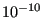

Next: *CYCLIC HARDENING Up: Input deck format Previous: *CRACK PROPAGATION Contents
Keyword type: model definition, material
This option is used to define the creep properties of a viscoplastic material. There is one optional parameter LAW. Default is LAW=NORTON, the only other value is LAW=USER for a user-defined creep law. The Norton law satisfies:
| (616) |
where  is the equivalent creep strain,
is the equivalent creep strain,  is the true
Von Mises stress an t is the total time. For LAW=USER the creep law must be
defined in user subroutine creep.f (cf. Section 8.1).
is the true
Von Mises stress an t is the total time. For LAW=USER the creep law must be
defined in user subroutine creep.f (cf. Section 8.1).
All constants may be temperature dependent. The card should be preceded by a *ELASTIC card within the same material definition, defining the elastic properties of the material. If for LAW=NORTON the temperature data points under the *CREEP card are not the same as those under the *ELASTIC card, the creep data are interpolated at the *ELASTIC temperature data points. If a *PLASTIC card is defined within the same material definition, it should be placed after the *ELASTIC and before the *CREEP card. If no *PLASTIC card is found, a zero yield surface without any hardening is assumed.
If the elastic data is isotropic, the large strain viscoplastic theory treated in [80] and [81] is applied. If the elastic data is orthotropic, the infinitesimal strain model discussed in Section 6.8.13 is used. If a *PLASTIC card is used for an orthotropic material, the LAW=USER option is not available.
First line:
Following lines are only needed for LAW=NORTON (default): First line:
Example: *CREEP 1.E-10,5.,0.,100. 2.E-10,5.,0.,200.
defines a creep law with A=, n=5 and m=0 for T(temperature)=100. and A= and n=5 for T(temperature)=200.
Example files: beamcr.